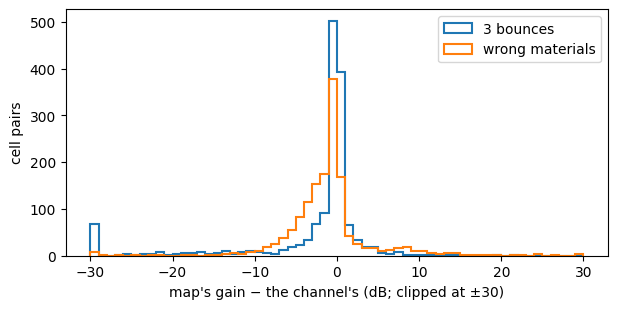

import math
import matplotlib.pyplot as plt
import numpy as np
from sklearn.ensemble import HistGradientBoostingRegressor
from comm_core import *When the radio map is wrong
Power control from a ray-traced map, when the map is not the channel: traced with too few bounces, with the wrong materials, or without the fading on top. Against predictors that learn from what the links measure.
Power control without channel knowledge shows that a ray-traced map, with the receiver’s reported cell and heading, predicts the channel far better than the link’s history. That assumes the map is the channel. A real map is traced from a model of the scene, which is never exact: fewer reflections than the real channel has, approximate wall materials, and none of the small-scale fading on top.
This example keeps one layout, and gives the transmitter a map that is exact, traced with too few bounces, or traced with the wrong materials, with or without fading on top. It compares looking the gain up in the map against learning from what the links measure: a model that uses the map as one input among others, and a map built from measurements alone.
The channel and the maps
One FindGoal layout (layout 0 of Power control on new layouts). Its channel is Sionna RT’s with 5 bounces. The maps a transmitter could have instead:
- Exact: the channel itself.
- 3 bounces: traced with fewer reflections, as a cheaper trace would be.
- Wrong materials: traced with other wall materials than the real ones.
Each scenario also comes with or without small-scale fading on top of the channel, which no map holds: Rayleigh, redrawn whenever an agent moves, drifting slowly while both stand still.
data = np.load('data/findgoal_layouts.npz')
k0 = list(data['seeds']).index(0)
CELLS = [tuple(int(v) for v in c) for c in data['cells'][k0]]
IDX = {c: i for i, c in enumerate(CELLS)}
to_gain = lambda a: 10 ** (a.astype(float) / 10)
CHANNEL = to_gain(data['gain_db'][k0]) # [rx, tx]
MAPS = {'exact': CHANNEL, '3 bounces': to_gain(data['layout0_depth3_gain_db']),
'wrong materials': to_gain(data['layout0_materials_gain_db'])}
db = lambda g: 10 * np.log10(np.maximum(g, 1e-30))
pairs = ~np.eye(len(CELLS), dtype=bool)
fig, ax = plt.subplots(figsize=(7, 3.2))
for name in ('3 bounces', 'wrong materials'):
error = (db(MAPS[name]) - db(CHANNEL))[pairs]
no_path = (MAPS[name][pairs] <= 1e-14).sum()
print(f'{name:16s} error {error[np.abs(error) < 50].mean():+5.1f} ± {error[np.abs(error) < 50].std():.1f} dB; '
f'{no_path} of {pairs.sum()} cell pairs without any path')
ax.hist(np.clip(error, -30, 30), bins=60, range=(-30, 30), histtype='step', lw=1.5, label=name)
ax.set(xlabel="map's gain − the channel's (dB; clipped at ±30)", ylabel='cell pairs')
ax.legend()
plt.show()3 bounces error -2.8 ± 9.0 dB; 62 of 1482 cell pairs without any path
wrong materials error -1.2 ± 5.8 dB; 0 of 1482 cell pairs without any path
The agents, and what the transmitter knows
Two agents move at random, as in Power control on new layouts. For each directed link and step, the transmitter knows the link’s last 4 gains, whether it moved and whether the receiver moved a step ago, and where the receiver was a step ago with its heading: since then, it has stayed or stepped ahead (its possible cells). From the map, it looks up the gain to the receiver’s last cell, and the lowest and highest over its possible cells.
STEPS, HISTORY = 60, 4
DIRS = [(1, 0), (0, 1), (-1, 0), (0, -1)]
def walk(seed):
"One episode: per step, both agents' cells and headings."
rng = np.random.default_rng(seed)
pos = [CELLS[k] for k in rng.choice(len(CELLS), 2, replace=False)]
head = [int(h) for h in rng.integers(4, size=2)]
out = []
for _ in range(STEPS):
out.append((tuple(pos), tuple(head)))
for a in rng.permutation(2):
action = rng.integers(4) # left, right, forward, nothing
if action < 2:
head[a] = (head[a] + (1 if action else -1)) % 4
elif action == 2:
ahead = (pos[a][0] + DIRS[head[a]][0], pos[a][1] + DIRS[head[a]][1])
if ahead in IDX and ahead != pos[1 - a]:
pos[a] = ahead
return out
def fading(episode, seed, rho=0.95):
"|g_t|² of a pair's Rayleigh fading: redrawn when an agent moves, drifting slowly while both stand still."
rng = np.random.default_rng(10_000 + seed)
draw = lambda: (rng.standard_normal() + 1j * rng.standard_normal()) / np.sqrt(2)
g, out = draw(), []
for t in range(len(episode)):
if t and episode[t][0] != episode[t - 1][0]:
g = draw()
elif t:
g = rho * g + np.sqrt(1 - rho ** 2) * draw()
out.append(abs(g) ** 2)
return np.array(out)
def samples(seeds, map_name, faded):
"Per directed link and step: what the transmitter knows (with the map's lookups), and the true gain."
M, out = MAPS[map_name], []
for seed in seeds:
episode = walk(seed)
fade = fading(episode, seed) if faded else np.ones(len(episode))
for j, i in ((0, 1), (1, 0)):
g = [CHANNEL[IDX[cells[i]], IDX[cells[j]]] * f for (cells, _), f in zip(episode, fade)]
for t in range(HISTORY, len(episode)):
(now, _), (before, heads), (earlier, _) = episode[t], episode[t - 1], episode[t - 2]
ahead = (before[i][0] + DIRS[heads[i]][0], before[i][1] + DIRS[heads[i]][1])
possible = [c for c in (before[i], ahead) if c in IDX and c != now[j]] or [before[i]]
lookup = [M[IDX[c], IDX[now[j]]] for c in possible]
out.append(dict(tx=now[j], pair=(now[j], now[i]), possible=possible, past=np.array(g[t - HISTORY:t][::-1]),
moved=[float(now[j] != before[j]), float(before[i] != earlier[i])], gain=g[t],
map=[M[IDX[before[i]], IDX[now[j]]] if before[i] != now[j] else 1.0, min(lookup), max(lookup)]))
return outThe predictors
| predictor | uses | how |
|---|---|---|
| C3-WM’s | last 4 gains | linear in |h|² (fit_gain_predictor, eq. 24) |
| C3-WM’s, in dB | last 4 gains | linear in dB |
| map lookup | the map, the receiver’s possible cells | the map’s lowest gain over the possible cells (MapChannelInversion) |
| learned quantile | last 4 gains, moves, the map’s lookups | gradient-boosted trees, 5% quantile of the gain in dB |
| measured map | the gains measured in past episodes | each cell pair’s mean gain (dB) over the training episodes; pairs never measured from a fit in log-distance; the lowest over the possible cells |
The learned quantile treats the map as one input among others: it learns how far to trust it. The measured map needs no ray tracing at all, only the layout to stay the same.
def measured_map(fit):
"Each cell pair's mean gain in dB over the training transmissions; never measured: a fit in log-distance."
seen = {}
for r in fit:
seen.setdefault(frozenset(r['pair']), []).append(db(r['gain']))
mean = {k: np.mean(v) for k, v in seen.items()}
distance = lambda k: math.hypot(*np.subtract(*sorted(k)))
w = np.polyfit([math.log10(distance(k)) for k in mean], list(mean.values()), 1)
def gain(a, b):
k = frozenset((a, b))
return 10 ** ((mean[k] if k in mean else np.polyval(w, math.log10(math.hypot(a[0] - b[0], a[1] - b[1])))) / 10)
return gain, len(mean) / (len(CELLS) * (len(CELLS) - 1) / 2)
def predictors(fit):
"name -> predict(samples) -> ĝ; everything learned from `fit` only."
y = db(np.array([r['gain'] for r in fit]))
sequences = [np.r_[r['past'][::-1], r['gain']] for r in fit]
psi, psi_db = fit_gain_predictor(sequences, history=HISTORY), fit_gain_predictor(sequences, history=HISTORY, domain='db')
X = lambda rs: np.c_[db(np.stack([r['past'] for r in rs])), db(np.array([r['map'] for r in rs])), [r['moved'] for r in rs]]
quantile = HistGradientBoostingRegressor(loss='quantile', quantile=0.05, max_iter=400, learning_rate=0.05,
early_stopping=False, random_state=0).fit(X(fit), y)
measured, coverage = measured_map(fit)
return {
"C3-WM's": lambda rs: np.array([max(psi(r['past']), 0.0) for r in rs]),
"C3-WM's, in dB": lambda rs: np.array([psi_db(r['past']) for r in rs]),
'map lookup': lambda rs: np.array([r['map'][1] for r in rs]),
'learned quantile': lambda rs: 10 ** (quantile.predict(X(rs)) / 10),
'measured map': lambda rs: np.array([min(measured(r['tx'], c) for c in r['possible']) for r in rs]),
}, coverageJudging a predictor
As in Power control on new layouts: the share of the servable transmissions (g ≥ g_min = Γσ²/ρ_max) reaching Γ, and the mean power relative to perfect CSI’s. The margin κ and the scheduling threshold τ (withhold when ρ̂ > τ ρ_max) are chosen on calibration episodes, the cheapest pair reaching the target there, and the predictors are judged on test episodes. Γ = 10 dB, σ² = −94 dBm, ρ_max = 20 dBm.
SNR_TARGET_DB, NOISE_DBM, MAX_POWER_DBM = 10.0, -94.0, 20.0
G_MIN = 10 ** ((SNR_TARGET_DB + NOISE_DBM - MAX_POWER_DBM) / 10)
MARGINS = np.arange(-10, 40.01, 0.25)
TAUS = (0.0, 1, 2, 3, 4, 5, 6, 8, 10, 12, 15, 20, 25, 30, math.inf)
def outcome(estimate, gain, tau):
"Per margin: the share of the servable transmissions reaching Γ, the mean power (× perfect CSI's)."
max_power, servable, need = 1 / G_MIN, gain >= G_MIN, 1 / gain
rho = 10 ** (MARGINS[:, None] / 10) / np.maximum(estimate, 1e-30)[None, :]
sent = rho <= max_power * 10 ** (tau / 10) if np.isfinite(tau) else np.ones_like(rho, bool)
power = np.where(sent, np.minimum(rho, max_power), 0)
reached = sent & (power >= need * (1 - 1e-9))
return reached[:, servable].mean(1), power.mean(1) / np.where(servable, need, 0).mean()
def deploy(cal, cal_gain, test, test_gain, target, taus=TAUS):
"κ and τ chosen on the calibration episodes (the cheapest reaching `target`, else the most reliable); on the test ones."
best = None
for tau in taus:
reached, power = outcome(cal, cal_gain, tau)
for k in range(len(MARGINS)):
key = (reached[k] >= target, -power[k] if reached[k] >= target else reached[k])
if best is None or key > best[0]:
best = (key, tau, k)
(met, _), tau, k = best
reached, power = outcome(test, test_gain, tau)
return dict(reached=reached[k], power=power[k], met=met, tau=tau, margin=MARGINS[k])The comparison
Fit on 200 episodes, calibration on 60 others, test on 60 more:
SCENARIOS = {'exact map': ('exact', False), 'map traced with 3 bounces': ('3 bounces', False),
'map with wrong materials': ('wrong materials', False), 'exact map, fading not in it': ('exact', True),
'3 bounces, and fading': ('3 bounces', True)}
FIT, CALIBRATION, TEST = range(0, 200), range(200, 260), range(1000, 1060)
results = {}
for scenario, (map_name, faded) in SCENARIOS.items():
fit, cal, test = samples(FIT, map_name, faded), samples(CALIBRATION, map_name, faded), samples(TEST, map_name, faded)
gains = lambda rs: np.array([r['gain'] for r in rs])
preds, coverage = predictors(fit)
results[scenario] = {name: {t: [deploy(p(cal), gains(cal), p(test), gains(test), t, taus=taus) for taus in ((0.0,), TAUS)]
for t in (0.95, 0.99)} for name, p in preds.items()}
print(f'\n{scenario}: {100 * (gains(test) >= G_MIN).mean():.1f}% of the test transmissions servable; '
f'measured map: {100 * coverage:.0f}% of the cell pairs measured')
print(f"{'':18s}{'withhold (τ = 0)':>34s}{'tuned τ':>34s}")
print(f"{'':18s}" + ''.join(f'{100 * t:>16.0f}%' for _ in range(2) for t in (0.95, 0.99)))
for name, r in results[scenario].items():
row = [r[t][rule] for rule in (0, 1) for t in (0.95, 0.99)]
print(f'{name:18s}' + ''.join(f"{100 * d['reached']:8.1f}% {d['power']:5.1f}×{' ' if d['met'] else '✗'}" for d in row))
exact map: 86.2% of the test transmissions servable; measured map: 95% of the cell pairs measured
withhold (τ = 0) tuned τ
95% 99% 95% 99%
C3-WM's 97.7% 11.0× 98.8% 14.6×✗ 97.7% 11.0× 98.8% 14.6×✗
C3-WM's, in dB 89.0% 0.9×✗ 89.0% 0.9×✗ 96.2% 4.1× 98.6% 10.5×
map lookup 97.9% 1.0× 97.9% 1.0×✗ 97.9% 1.0× 99.7% 4.4×
learned quantile 97.1% 1.0×✗ 97.1% 1.0×✗ 97.8% 1.3× 99.6% 4.4×
measured map 91.3% 1.0×✗ 91.3% 1.0×✗ 97.9% 3.8× 99.7% 7.6×
map traced with 3 bounces: 86.2% of the test transmissions servable; measured map: 95% of the cell pairs measured
withhold (τ = 0) tuned τ
95% 99% 95% 99%
C3-WM's 97.7% 11.0× 98.8% 14.6×✗ 97.7% 11.0× 98.8% 14.6×✗
C3-WM's, in dB 89.0% 0.9×✗ 89.0% 0.9×✗ 96.2% 4.1× 98.6% 10.5×
map lookup 87.6% 1.0×✗ 87.6% 1.0×✗ 95.9% 6.8× 98.5% 7.3×
learned quantile 88.8% 0.6×✗ 88.8% 0.6×✗ 96.8% 4.0× 99.0% 6.2×
measured map 91.3% 1.0×✗ 91.3% 1.0×✗ 97.9% 3.8× 99.7% 7.6×
map with wrong materials: 86.2% of the test transmissions servable; measured map: 95% of the cell pairs measured
withhold (τ = 0) tuned τ
95% 99% 95% 99%
C3-WM's 97.7% 11.0× 98.8% 14.6×✗ 97.7% 11.0× 98.8% 14.6×✗
C3-WM's, in dB 89.0% 0.9×✗ 89.0% 0.9×✗ 96.2% 4.1× 98.6% 10.5×
map lookup 90.9% 1.5×✗ 90.9% 1.5×✗ 98.2% 5.7× 99.2% 6.6×
learned quantile 90.5% 0.7×✗ 90.5% 0.7×✗ 97.6% 3.7× 99.6% 6.2×
measured map 91.3% 1.0×✗ 91.3% 1.0×✗ 97.9% 3.8× 99.7% 7.6×
exact map, fading not in it: 85.9% of the test transmissions servable; measured map: 95% of the cell pairs measured
withhold (τ = 0) tuned τ
95% 99% 95% 99%
C3-WM's 96.0% 8.3× 97.2% 9.9×✗ 95.7% 7.9× 97.4% 9.9×✗
C3-WM's, in dB 83.8% 0.9×✗ 83.8% 0.9×✗ 95.3% 4.7× 98.7% 10.1×
map lookup 83.4% 1.5×✗ 83.4% 1.5×✗ 95.5% 5.5× 98.7% 8.7×
learned quantile 86.0% 1.1×✗ 86.0% 1.1×✗ 96.5% 4.5× 98.8% 7.5×
measured map 83.3% 1.8×✗ 83.3% 1.8×✗ 95.9% 6.1× 99.0% 9.4×
3 bounces, and fading: 85.9% of the test transmissions servable; measured map: 95% of the cell pairs measured
withhold (τ = 0) tuned τ
95% 99% 95% 99%
C3-WM's 96.0% 8.3× 97.2% 9.9×✗ 95.7% 7.9× 97.4% 9.9×✗
C3-WM's, in dB 83.8% 0.9×✗ 83.8% 0.9×✗ 95.3% 4.7× 98.7% 10.1×
map lookup 79.6% 1.3×✗ 79.6% 1.3×✗ 93.9% 7.2× 98.5% 8.9×
learned quantile 83.7% 1.0×✗ 83.7% 1.0×✗ 96.3% 4.9× 98.8% 8.0×
measured map 83.3% 1.8×✗ 83.3% 1.8×✗ 95.9% 6.1× 99.0% 9.4× - With an exact map, the lookup reaches 95% at perfect CSI’s power, with no margin: the receiver’s actual cell is one of its possible cells, so the lookup never overestimates. 99% costs 4.4×, because of the receiver’s position, not the map. In about 2% of the transmissions, one possible cell is beyond the budget while the cell the receiver went to is not. Sending those takes a large threshold
τ, and then the transmitter also spendsρ_maxon the 14% of transmissions that can’t be served. - An imperfect map makes the lookup the worst map-based predictor. Traced with 3 bounces (−2.8 ± 9.0 dB off, and 62 cell pairs without any path), it needs 6.8× for 95%. With the wrong materials (−1.2 ± 5.8 dB off), 5.7×. The learned quantile, given the same map, needs 4.0× and 3.7×: it learns how far to trust the map.
- The measured map needs no ray tracing: 3.8× for 95% and 7.6× for 99%, with 95% of the cell pairs measured in 200 episodes. That is as good as a wrong map used well. It holds only while the layout stays the same.
- Fading the map doesn’t hold costs everyone, the exact map included: 4.5–7.2× for 95%, 7.5–10× for 99%. The learned quantile is the cheapest at 99%; at 95%, it is within 5% of the cheapest.
- C3-WM’s predictor (linear in
|h|²) never reaches 99%, and needs 8–11× for 95%. Withholding as soon asρ̂ > ρ_max(τ = 0) meets 95% on the calibration episodes only with the exact map’s lookup, and with C3-WM’s predictor, which rarely predicts more thanρ_max.
In short
- An exact map is worth using directly: the lookup over the receiver’s possible cells needs no margin. Most of what remains is the receiver’s position, which a fresher report would reduce.
- An imperfect map is worth learning from, not looking up. Given the map as an input, a learned quantile model is the cheapest at 99% in every scenario with an imperfect map or with fading, and within about 5% of the cheapest at 95%.
- Without any ray tracing, measure the map, if the layout stays the same. When it changes from episode to episode, see Power control on new layouts.
tuned = lambda scenario, name, target: results[scenario][name][target][1]
assert tuned('exact map', 'map lookup', 0.95)['power'] < 1.2 # an exact map: no margin needed
for scenario in ('map traced with 3 bounces', 'map with wrong materials', 'exact map, fading not in it', '3 bounces, and fading'):
assert tuned(scenario, 'learned quantile', 0.99)['power'] < tuned(scenario, 'map lookup', 0.99)['power'] # learn from a wrong map
assert tuned(scenario, 'learned quantile', 0.95)['power'] < tuned(scenario, 'map lookup', 0.95)['power']
assert not any(tuned(s, "C3-WM's", 0.99)['met'] for s in SCENARIOS)